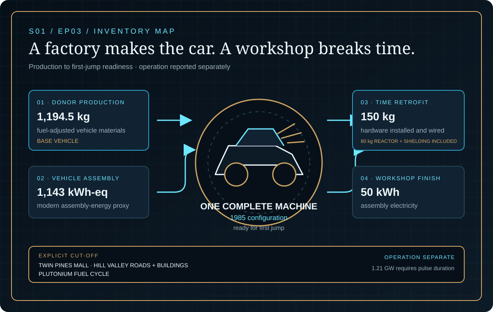
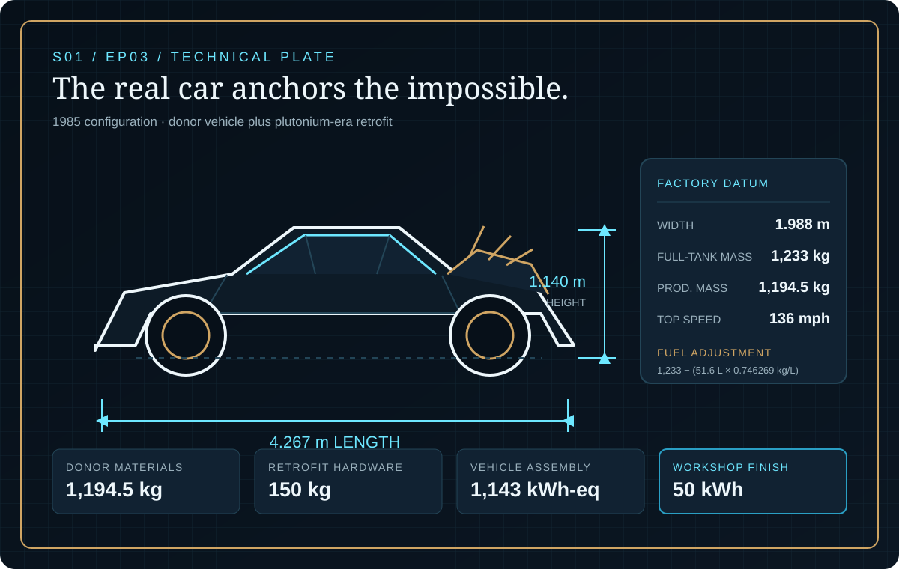
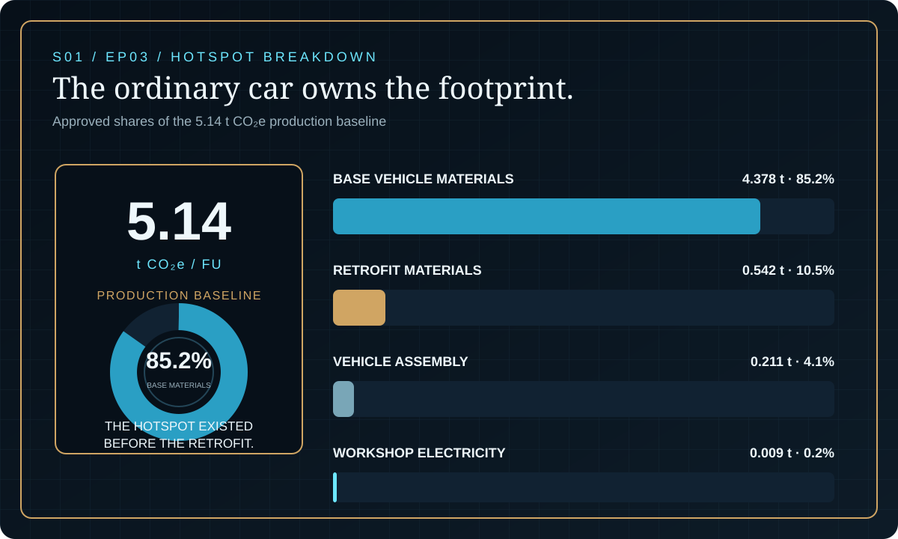

EPISODE #03 · SEASON I · MACHINES & WORLDS
DeLorean Time Machine
What happens when the real car anchors the impossible?
Science fiction, reconstructed through life-cycle logic. Impossible technologies, reconstructed as traceable systems.
THE SUBJECT
One machine. One first jump.
The approved episode reconstructs one complete 1985-configuration DeLorean Time Machine: one DMC-12 plus the plutonium-era retrofit, assembled in Doc Brown's workshop and ready for its first time-jump. The real car anchors the model through a 1,194.5 kg fuel-adjusted production mass.
The time-machine conversion enters as 150 kg of engineered hardware, including an 80 kg reactor and shielding structure, plus 50 kWh of workshop electricity. Twin Pines Mall, Hill Valley roads and buildings, and the plutonium fuel cycle remain explicit cut-offs. Operation is reported separately because the documented 1.21 GW power rating cannot become energy without pulse duration.
4.267 m
The approved factory length anchors the donor vehicle geometry.
1,194.5 kg
Fuel-adjusted production mass of the DMC-12 donor vehicle.
85.2%
Base vehicle materials dominate the production baseline.
1 ms–10 s
Pulse duration converts the 1.21 GW claim into an energy sensitivity.
VISUAL MODEL
A factory makes the car. A workshop breaks time.
Donor vehicle production and assembly combine with the retrofit hardware and workshop finish to reach first-jump readiness.


DETAILED LIFE CYCLE INVENTORY
Every kilogram has a treatment
Activity data, status and contribution reporting reproduce the approved episode. Sub-flows remain grouped where the source reports only their combined climate contribution.
| Stage | Component / activity | Activity data | Climate change | Modelling basis |
|---|---|---|---|---|
| Raw materials | Base vehicle metals | 979.7 kg | Part of 4.378 t base-vehicle materials | Primary-metals factor; included. |
| Raw materials | Glass | 35.8 kg | Part of 4.378 t base-vehicle materials | Primary-glass factor; included. |
| Raw materials | Average plastics | 131.4 kg | Part of 4.378 t base-vehicle materials | Primary-plastics factor; included. |
| Raw materials | Tyres / rubber | 23.9 kg | Part of 4.378 t base-vehicle materials | Tyres factor; included. |
| Raw materials | Other vehicle materials | 23.7 kg | Part of 4.378 t base-vehicle materials | Weighted proxy; included. |
| Manufacturing | Vehicle assembly | 1,143 kWh-eq | 0.211 t CO₂e | Argonne analogue combined with UK lifecycle electricity. |
| Installation | Time-travel hardware | 150 kg | 0.542 t CO₂e | Engineered bill of materials; estimate. |
| Installation | Workshop assembly | 50 kWh | 0.009 t CO₂e | UK lifecycle electricity; estimate. |
| Approved production baseline | 5.14 t CO₂e | One complete 1985-configuration machine ready for its first jump. | ||
Quantified
DMC-12 donor vehicle, conversion hardware, reactor and shielding structure, and 50 kWh of workshop electricity.
Parametric
The 1.21 GW event remains a duration sensitivity; no single energy value is assigned without time.
Explicit cut-off
Twin Pines Mall infrastructure, Hill Valley roads and buildings, and the plutonium fuel cycle.
Cut-off event
The machine is assembled and ready for its first jump; the shared setting remains available.
EMISSION FACTOR LEDGER
Real factors. Declared proxies.
Vehicle composition and assembly energy are Argonne analogues. Retrofit masses are engineering estimates. UK factors are used only where activity, unit and boundary are compatible.
| Activity | Unit | Factor | Source / status | Role in model |
|---|---|---|---|---|
| Primary metals | kg CO₂e/kg | 3.82195 | UK26-MAT | Base vehicle metals. |
| Primary glass | kg CO₂e/kg | 1.40277 | UK26-MAT | Base vehicle glass. |
| Average plastics | kg CO₂e/kg | 3.17051 | UK26-MAT | Base vehicle plastics. |
| Tyres | kg CO₂e/kg | 3.33557 | UK26-MAT | Tyres and rubber. |
| Lifecycle electricity | kg CO₂e/kWh | 0.18436 | UK26-ELEC | Vehicle assembly, workshop electricity and pulse-duration sensitivity. |
Lifecycle electricity = 0.13096 generation + 0.01299 T&D + 0.03682 WTT generation + 0.00359 WTT T&D = 0.18436 kg CO₂e/kWh.
The 80 kg reactor and shielding structure is inside the hardware bill of materials. Plutonium production is not modelled because no defensible mass or fuel-cycle pathway is specified.
HOTSPOT
The ordinary car owns the footprint
Base vehicle materials contribute 85.2% of the approved baseline. Retrofit materials add 10.5%, vehicle assembly 4.1% and workshop electricity 0.2%.

Production baseline
5.14 t CO₂e
One complete machine ready for its first jump.
Base vehicle materials
4.378 t · 85.2%
The hotspot exists before the retrofit.
Retrofit materials
0.542 t · 10.5%
Time-machine hardware remains secondary.
Assembly energy
0.220 t · 4.3%
Vehicle assembly and workshop electricity combined.
SENSITIVITY · RETROFIT MASS
Hardware mass moves the total by 0.43 t
100 kg: 4.96 t CO₂e.
150 kg baseline: 5.14 t CO₂e.
220 kg: 5.39 t CO₂e.
Only retrofit mass changes. Vehicle, workshop energy, factors and boundary stay locked.
SENSITIVITY · PULSE DURATION
Power needs time
1 ms: 0.336 kWh and +0.062 kg CO₂e; machine plus one jump remains 5.14 t.
1 s: 336 kWh and +62.0 kg; machine plus one jump is 5.20 t.
10 s: 3,361 kWh and +620 kg; machine plus one jump is 5.76 t.
These are UK-grid energy equivalents, not estimates of plutonium emissions.
INTERPRETATION
The machine is mostly a car
The 1,233 kg factory datum replaces the obsolete 900 kg teaching inventory. Base vehicle materials contribute 85.2% of production, while hardware plus workshop electricity contributes 10.7%.
The approved finding states a 5.14 t CO₂e base case, a declared 4.0–6.4 t range and medium-low confidence. The 1.21 GW claim yields no unique energy value without pulse duration.
THE VERDICT
“The clock can run backward. The inventory cannot.”